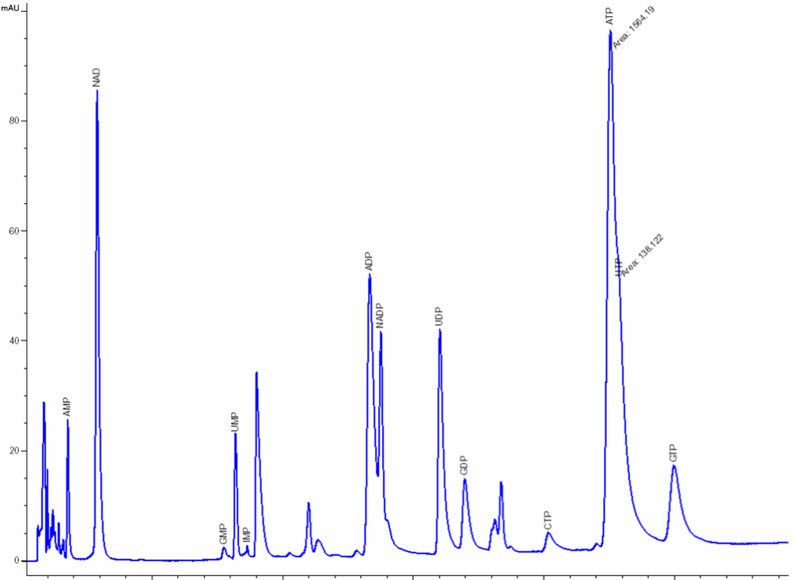

NOVOCIB has initially developed its expertise in Nucleotide Analysis to study the drug impact on the cell metabolism of nucleotides. The methodology we implemented allows us to extend the application field of NOVOCIB's expertise in nucleotide analysis and to provide nucleoside analysis services for many other purposes such as, for instance, life science or food quality control.
Extracts from cultured cells, blood cells, body fluids are routinely analyzed in our lab but many other materials can be subjected to a feasibility study for nucleotide analysis. Please feel free to contact us for any question.
Aims: Analysis of the Nucleoside and Nucleotide content in biological samples.
The Nucleotide Analysis procedures implemented by NOVOCIB have been specially developed to study the impact of drugs on the cell metabolism of nucleosides and nucleotides by comparison of metabolic profiles of treated vs. untreated cells. However, Nucleotide Analysis can be a major concern for many other purposes and NOVOCIB's know-how can be adapted for the analysis of other materials. Examples of nucleotide analysis are presented in detail on this website: Baby Milk analysis, Fish / Seafood Freshness control... (see the related links above right for further detail).
The technical presentation of NOVOCIB's Customized Nucleotide Analytical services is presented here through the example of application field for which it has been first developed: analysis of drug-treated and untreated cells. In this case, it enables to:
• reveal the metabolic changes due to the drug action, either on the purine or on the pyrimidine pathway,
• identify the metabolites whose levels are modified by the drug treatment,
• trace back to the metabolic step(s) altered by the drug, and to its likely target(s).
Cell culture and treatment: The choice of the cell line and culture conditions has been optimized to get highly reproducible results. Assays are usually done with human hepatoma cell line Huh7. Cells are grown in DMEM supplemented with FCS (5%), glutamine (1mM), sodium pyruvate (1mM) and maintained in exponential phase. Cells are seeded on 10cm-dishes and allowed to adhere overnight. The drug is added next day at the agreed concentration and at a cell confluence of about 50%.
The following metabolites are routinely analyzed*:
| ATP | ADP | AMP | Uridine | Hypoxanthine |
| GTP | GDP | GMP | dGTP | Tryptophane* |
| UTP | UDP | IMP | dATP | |
| CTP | CDP | UMP | dUTP | |
| Guanine | Uracyl | CMP | dTTP | |
| Cytidine | Guanine | Guanosine | Adenosine |
Cultured cell: Nucleosides and Nucleotides Analysis is usually performed by extraction of ≈107 treated cells, per compound and per concentration tested. Control untreated cells are cultured under the same conditions to provide a reference metabolic profile.
Depending on the cell line or the experimental conditions, a 0.5-1.105 cell-extract can be sufficient to analyze the major metabolites (e.g. ATP, ADP�).
Blood cells: Typically, a 200µl-sample of blood is sufficient to analyze the major metabolites in Red Blood Cells (RBC), and a 1ml-sample for Peripheral Blood Mononuclear cells(PBMC).
If needed, for instance to focus on naturally low-level metabolites, larger samples can be prepared, e.g. up to 108 of cultured cells.
Nucleosides & nucleotides separation and analysis: The extraction and separation procedures have been optimized and specially developed by NOVOCIB. After a 48h-treatment, nucleosides and nucleotides are extracted; Nucleosides, nucleotides mono-, di-, and triphosphates, deoxynucleotides triphosphates and bases are separated by ion-pairing HPLC (Agilent 1100) with a Zorbax EclipsePlus C18 column and quantified using an Agilent ChemStation software. The resulting values are normalized by cell number. A mixture of 30 authentic standards (Sigma Aldrich, Roth) is run before and after every set of samples analysis.
| Figure 1: Separation by ion-pairing HPLC of a 6.6pmol / 20�l standard mixture of 30 nucleosides, nucleotide mono-, di-, and triphosphates, deoxynucleotide triphosphates and bases
V mouse over to enlarge
|
 |
| Figure 2: Quantification of intracellular metabolites in Huh-7 non-treated cells
V mouse over to enlarge
|

|
Metabolites |
pmol / 106 cells * |
Published data ** |
|
| UMP | 728.1 |
+/- 56.8 |
|
| GMP | 34.4 |
+/- 4.8 |
|
| IMP | 72.7 |
+/- 21.4 |
130 |
| NAD | 1,825.1 |
+/- 155.5 |
|
| UDP-Glu | 1,113.9 |
+/- 87.1 |
|
| AMP | 122.7 |
+/- 12.9 |
|
| UDP | 1,730.3 |
+/- 207.1 |
|
| CTP | 2,754.5 |
+/- 165.4 |
|
| ADP | 4,652.4 |
+/- 609.8 |
|
| UTP | 2,494.2 |
+/- 156.1 |
|
| GTP | 1,449.7 |
+/- 81.4 |
1,540 |
| ATP | 6,561.0 |
+/- 346.0 |
6,580 |
| * Mean +/- SD for 5 independent experiments
** J. Balzarini et al. (1993) |
|||
Nucleotide profiling: For every nucleotide and nucleoside metabolite, drug-treated / non-treated cells concentration ratios are calculated and graphically reported. The base line indicates the control level.
(^Top)

| Related Links |
| • Infant Formula Nucleotide Analysis
• Fish & Meat Freshness Analysis |